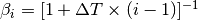
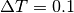
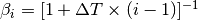
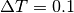
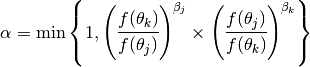
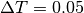

The Markov chain Monte Carlo (MCMC) method implemented in BAMM estimates the posterior probability distribution of diversification models that best describe a particular phylogenetic dataset. Before version 2.0.0, BAMM used a single Markov chain to explore the landscape of models and their parameter values. A single chain, however, may get stuck in local optima, which results in less mixing and more time needed for convergence.
Metropolis coupled Markov chain Monte Carlo [(MC)3], introduced in BAMM 2.0.0, increases the number of Markov chains that explore the landscape of models and their parameters. Not only are there more chains, but each one has a different temperature. The cold chain is the main chain and behaves as before. The heated chains explore a landscape that is flatter than the landscape explored by the cold chain. Therefore, it is easier for a heated chain to cross deep valleys in the landscape and not get stuck in local optima.
After the chains independently explore the landscape for a certain number of generations, a proposal is made to swap the temperatures of two random chains. If a swap involving the cold chain is successful, it will cause a previously heated chain to become the main chain. As a result, a chain that is stuck in a local optimum may immediately jump to another area of the landscape.
The implementation of (MC)3 in BAMM follows that described in
Altekar et al. 2004.
For each chain  , its temperature is set to
,
where is the temperature increment parameter.
For example, if there are 4 chains and ,
the temperatures of each chain are 1, 0.9091, 0.8333, and 0.7692.
The temperature of the cold chain is always 1.
Note that the value of should be greater than 0
and chosen such that the probability of accepting a swap
is between 20% and 60% (Altekar et al. 2004).
, its temperature is set to
,
where is the temperature increment parameter.
For example, if there are 4 chains and ,
the temperatures of each chain are 1, 0.9091, 0.8333, and 0.7692.
The temperature of the cold chain is always 1.
Note that the value of should be greater than 0
and chosen such that the probability of accepting a swap
is between 20% and 60% (Altekar et al. 2004).
The temperature of each chain goes into the calculation
of the acceptance probability for a within-model proposal
(i.e., not involving changes in the dimensionality of the model):
where and are parameter vectors
corresponding to the current and proposed states for chain ,
 and
and  are the corresponding likelihood
and prior density functions,
and is the relative probability
of proposing a move to parameter vector
given that the current state is .
A similar calculation is done for the acceptance probability for proposals
that change the dimensionality of the model.
are the corresponding likelihood
and prior density functions,
and is the relative probability
of proposing a move to parameter vector
given that the current state is .
A similar calculation is done for the acceptance probability for proposals
that change the dimensionality of the model.
After a certain number of generations, two randomly chosen chains
 and
and  are swapped with acceptance probability
are swapped with acceptance probability

Using a single CPU, the amount of time a run takes to finish scales linearly with the number of chains. Because chains are mostly independent from each other, except when two chains are chosen to swap states, they may be set up to run on different CPUs in parallel. BAMM implements this parallelization using threads in C++11.
There are four settings in BAMM that control the behavior of (MC)3. They are in the template and example control files under the heading METROPOLIS COUPLED MCMC. The number of Markov chains to use is specified with numberOfChains. The value is specified with deltaT. The number of generations between chain swap proposals is specified with swapPeriod. BAMM will output to a file (chain_swap.txt by default) the generation in which a swap proposal occurred, the ranking of the two chains chosen (1 is the cold chain, 2 is the first heated chain, etc.), and whether the swap was accepted. The file to which to output these data is specified with chainSwapFileName.
Our preliminary tests show that four chains produces good MCMC mixing. The value should be set such that the probability of accepting a chain swap proposal is between 20% and 60%. For small to medium sized trees (< 1,000 taxa), we have found that works well. For large trees,  or works better. We have not examined the effects of the swap period in detail, but in terms of run time, the smaller the swap period, the longer the run takes to complete. A swap period of 1000 has worked for us.
For those using the BAMM GitHub repository, we have provided a bash script (OS X and Linux only), chain-swap-percent.sh, to help determine the optimal value for a specific data set. It will print the percent acceptance of the chain swap proposals. This script is located in the tools directory. To run, first make sure you are in the directory containing your data files. If you would like to test values of 0.01, 0.05, and 0.1, you would run:
<bamm_path>/tools/chain-swap-percent.sh --deltaT 0.01 0.05 0.1
--numberOfChains 4 --swapPeriod 1000 --run bamm -c control.txt
where <bamm_path> is the path to the bamm directory. You could also specify multiple values for numberOfChains and swapPeriod, and the script will test every combination of values.